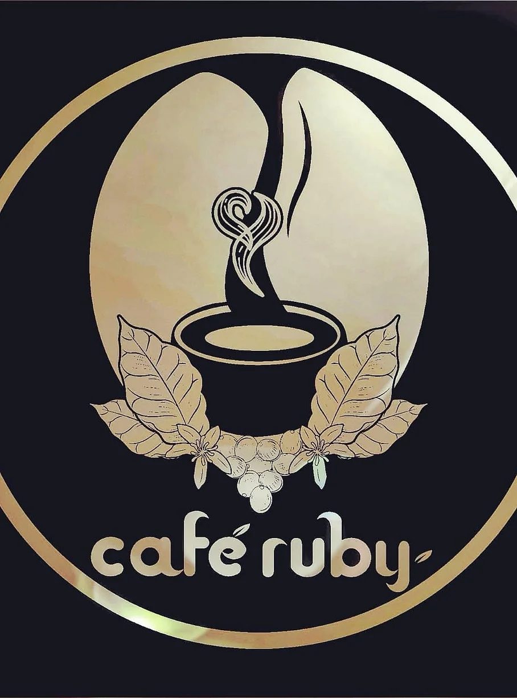

Café Ruby es una marca innovadora en el procesamiento, distribución y comercialización del café, ya que su producto lleva una cadena de valor en su procesamiento desde su extracción del grano de café hasta su distribución al cliente final.
Desde hace más de dos siglos y hasta nuestros días, el café se ha mantenido como una de las bebidas de mayor consumo en el mundo. Tal es el caso de Honduras, cuya actividad cafetalera aporta el 5% al ProductoInterno Bruto y es fuente de alrededor de un millón de empleos en el sector rural, áreas más vulnerables y necesitadas del país, más de 102 mil familias se dedican a su producción.
Es satisfacer las necesidades, deseos y expectativas de entretenimiento familiar, convirtiéndose en la mejor opción del país. Logrando las necesidades de nuestros clientes con calidad y buen servicio.
Café Ruby se basa en los siguientes valores, los cuales son necesarios para satisfacer correctamente las necesidades de nuestros clientes y llevar a cabo las operaciones en el mercado.
Copyright © 2024 · By Wuendy Rodríguez